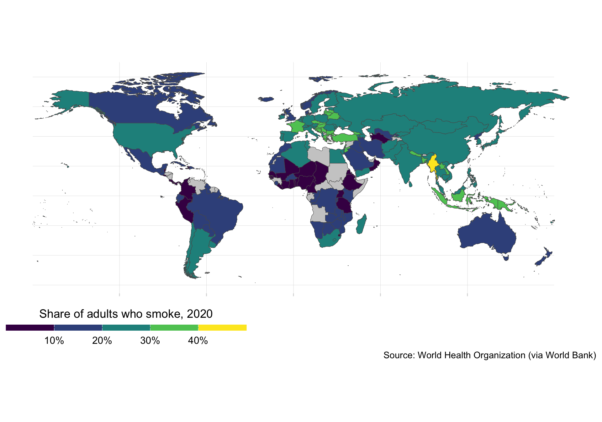
Our World In Data choropleth
A post on how recreate the Our World In Data characteristic choropleth in R.
Purpose
I really look up to Max Roser and the team at Our World in Data. They have some of the best short form articles condensing a wealth of academic literature to, in their words, “make progress against the world’s largest problems”.
The mission is summed up well in a lecture given at Stellenbosch University by Max Roser last year, included below.
In this tutorial I want to walk through recreating one of their classic chart types in R, the world map choropleth with an overlayed line graph for each coutnry. A typical example shown below.

Finished product
Here is the finished product that we will create in the tutorial
Context
There is a lot of information about the OWID grapher tool. You can have a look at their github repo and an older reddit AMA if you are interested. It’s a custom system that allows for systematic changes across their website, drawing on data from a central database.
Components
What are the parts I want to recreate? The map has:
a base map, where the colour fill of each country indicates it’s position in a specific measure in a particular year.
a simple line chart that appears when you hover over a country, showing how the measure has changed within a country over time.
a clear legend
a note specifying the source of the data
I walk through creating each of these below.
The world map
The base map is sourced from the maps package. I add a three letter country code from the english name of the country using the countrycode package and filter out Antarctica, Greenland and the French Southern and Antarctic Lands.
Show the code
# preamble
library(tidyverse)
library(sf)
theme_set(theme_light())
# load map
map <- st_as_sf(maps::map(database="world", plot = FALSE, fill = TRUE))
# create code to match coutnry to data with
library(countrycode)
map <- map %>%
mutate(code = countrycode(ID, "country.name", "iso3c"))
# remove clutter from map
country_to_remove <- c(
'Antarctica','Greenland', 'French Southern and Antarctic Lands'
)
map <- map %>%
filter(!ID %in% country_to_remove)The base map is projected with the Web Mercator or WGS 84 projection, the same one Google Maps uses.
Show the code
map %>%
ggplot() +
geom_sf()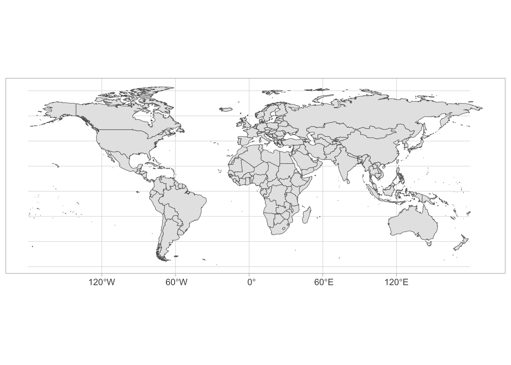
Data
I source the data from the Our World in Data website (the WHO collects the data and the World Bank distributes it). We read in the data as a CSV file, and tidy up the column names so that they are in snake case with the clean_names() command from the very helpful janitor package.
Show the code
df <- read.csv("data/share-of-adults-who-smoke.csv")
df <- df %>%
as_tibble() %>%
dplyr::rename(value = Prevalence.of.current.tobacco.use....of.adults.) %>%
janitor::clean_names()Next we remove the summary groups which we cannot show on the map, including the World Bank country income groupings.
Show the code
df %>%
filter(!code %in% map$code) %>%
distinct(entity)# A tibble: 16 × 1
entity
<chr>
1 East Asia and Pacific
2 Europe and Central Asia
3 European Union
4 High income
5 Latin America and Caribbean
6 Low and middle income
7 Low income
8 Lower middle income
9 Middle East and North Africa
10 Middle income
11 North America
12 South Asia
13 Sub-Saharan Africa
14 Tuvalu
15 Upper middle income
16 World Show the code
df <- df %>%
filter(code %in% map$code)Create a colour palette
What we want to do is use the scale_color_viridis_c() palette. We have to map it to the min and max of the values in our dataset for smoking so that we get a nice mapping across the colour palette.
Show the code
df %>%
summarise(
min = min(value),
max = max(value)
)# A tibble: 1 × 2
min max
<dbl> <dbl>
1 3.5 68.5Show the code
library(viridisLite)
vir_10 <- viridis(n = 10)
smoking_hex <- scales::gradient_n_pal(
colours = vir_10,
values = seq(0, 50, by = 5)
)
scale_smoking <- function() {
scale_color_gradientn(
colours = vir_10,
values = seq(0, 50, by = 5) / 50,
limits = c(0, 68.5),
name = "value"
)
}How to plot the line graph?
The line graph that appears when you hover over OWID map is very simple. It has just the starting value on the y-axis, and the first and last years on the x-axis, and a line that changes colour in accordance with the scale of the choropleth. The hover window which contains the graph also shows the country name, and the value of the measure in the most recent year.
To recreate it, we need store these four values, and draw the coloured line.

A function for plotting the graph
First we write a function to plot the line that is a very minimal ggplot, removing lots of superfluous elements with the theme() command.
Show the code
# Here the function to plot the line takes only one argument, `cd` the country code
plot_line <- function(cd) {
# get axis marks
label_y <- df %>%
filter(code == cd) %>%
mutate(
min_year = min(year),
max_year = max(year)
) %>%
filter(year == min(year))
# plot the line
df %>%
filter(code == cd) %>%
ggplot(aes(year, value)) +
geom_point(cex = 3) +
# mapping the colour of the line segment to the value is done here
geom_line(aes(colour = value), cex = 2, alpha = .7) +
# this scale is created above, with bounds appropriate to this data
scale_smoking() +
scale_y_continuous(
# specifying the break on the y-axis creates the axis text
breaks = c(label_y$value),
labels = scales::percent_format(scale = 1, accuracy = .1),
# the limits argument here ensures the y-axis starts at zero
limits = c(0, NA)
) +
scale_x_continuous(
# x-axis needs only two years, the first and last
breaks = c(label_y$min_year, label_y$max_year)) +
theme(
# removing the axis ticks and lines clears the graph of clutter
axis.ticks.y = element_blank(),
panel.grid.major.x = element_blank(),
panel.grid.minor.x = element_blank(),
legend.position = "none",
text = element_text(size = 20)
) +
labs(
x = NULL,
y = NULL
)
}
# Test the function with India.
plot_line("IND")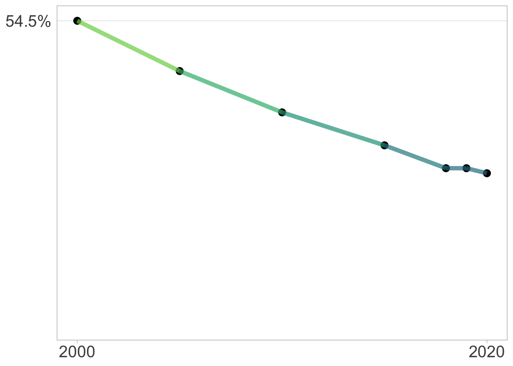
Next to make the table that displays the most recent value
We write a function to make a gt() table that contains just two cells. In the left cell of the table is our line graph from above that shows the evolution of smoking rates in each country from 2000 onwards. In the right cell is the most recent value for the metric.
Show the code
library(gt)
library(gtExtras)
make_table <- function(cd) {
message("Making table for ", cd)
vars <- df %>%
filter(code == cd) %>%
filter(year == max(year))
plot <- plot_line(cd)
# the `ggplot_image` command outputs an image that can easily be put into a gt table when formatted as markdown
plot <- gt::ggplot_image(plot, height = px(250), aspect_ratio = 1.6)
tbl <- tibble(plot = plot, value = vars$value, context = glue::glue("in {vars$year}"))
gt(tbl) %>%
fmt_markdown(columns = c(plot)) %>%
fmt_percent(value, scale_values = F, decimals = 1) %>%
# the `merge_stack` command joins the value and the year in one cell
# the `smoking_hex` function we created above makes the text coloured appropriately
gt_merge_stack(col1 = value, col2 = context, palette = c(smoking_hex(tbl$value), "grey")) %>%
tab_style(
style = cell_text(size = "xx-large"),
locations = cells_body(
columns = c(value)
)
) %>%
tab_header(
# title table with coutnry name
title = md(glue::glue("**{vars$entity}**"))) %>%
tab_options(column_labels.hidden = TRUE) %>%
as_raw_html(inline_css = F)
}
# Test on South Africa
make_table("ZAF")| South Africa | |
<img src= |
20.3%
in 2020
|
Creating the plots for each country
Here we use the purrr::map command to make the table in raw HTML for each country and save it inside a tibble. The output shows an HTML list in the column called gt.
Show the code
gt_tables <- df %>%
distinct(code) %>%
mutate(gt = purrr::map(code, make_table))
gt_tablesWe then create a tibble called df_map that selects the most recent year for each country from the dataset and joins it to the map by the country code variable we created above. Finally we join this to the tibble of tables called gt_tables.
Show the code
df_map <- df %>%
group_by(entity) %>%
filter(year == max(year)) %>%
ungroup() %>%
left_join(map, by = c("code"))
df_map <- df_map %>%
inner_join(gt_tables)Creating the interactive figure
Now we are ready to create the interactive figure!
We begin by drawing a static map in grey, with data from the original map. Next we overlay the interactive choropleth. The grey static map will show through all the countries we don’t have data on in the dataset.
Show the code
g <- df_map %>%
ggplot(aes(geometry = geom)) +
geom_sf(data = map, fill = "grey80") +
geom_sf_interactive(aes(fill = value, tooltip = gt)) +
scale_fill_binned(type = "viridis", labels = scales::percent_format(scale = 1)) +
cowplot::theme_minimal_grid() +
theme(legend.position = "bottom") +
guides(fill = guide_colourbar(barwidth = 20, barheight = .5, title.position = "top", label = TRUE)) +
labs(
fill = "Share of adults who smoke, 2020",
caption = "Source: World Health Organization (via World Bank)"
) +
theme(
plot.background = element_rect(fill = "white", color = NA),
plot.title = element_text(hjust = 0.5, family = "marker", size = 50),
plot.subtitle = element_markdown(size = 20, family = "open", lineheight = 0.5),
plot.caption = element_markdown(size = 12, family = "open"),
axis.text = element_blank(),
axis.title = element_blank(),
panel.grid.major = element_line(color = "grey80", size = 0.1),
legend.title.align = .5
)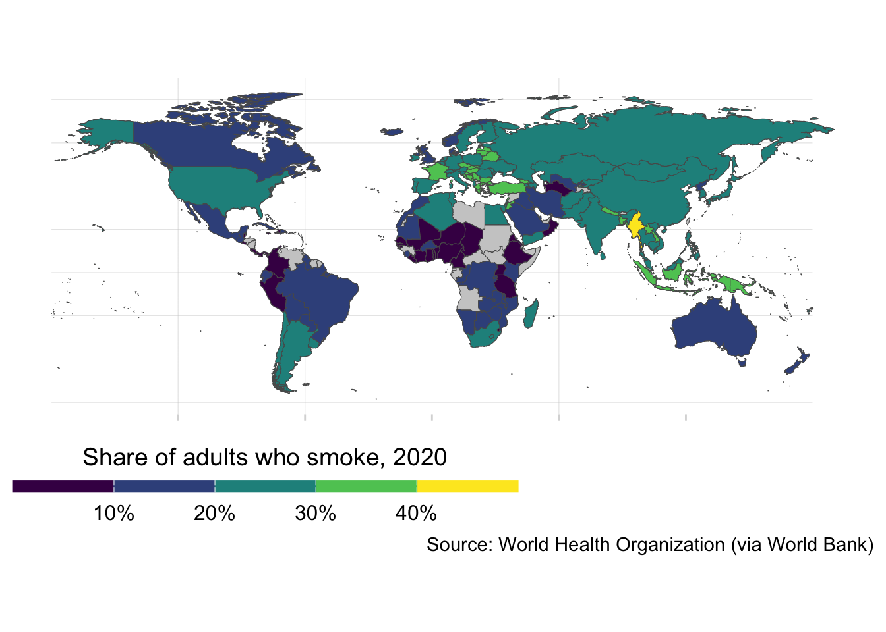
Making it interactive
Wow! Have a look at that! Pretty neat, and similar to the OWID explorer. I might make this more extendable in the future that you can upload your own data, but that’s for another day.
The code below turns the plot into a hover-able widget. I’ve stopped running it on the blog: with a line for every country baked in, the widget weighed in at about 85 MB, so the maps on this page are static images of the same plot.
Show the code
# customizing the CSS makes the hover box easier to read.
tooltip_css <- "background-color:gray;color:white;padding:10px;border-radius:5px;text-align:center;"
ggiraph(
ggobj = g,
options = list(
opts_tooltip(css = tooltip_css),
opts_sizing(width = 1)
)
)Which African country has seen the largest reduction in smoking?
Finally, we can plot the evolution of smoking behaviour among adults in Africa, highlighting my home nation of South Africa.
Show the code
get_ranking <- function(continent_in) {
message("Getting ranking for ", continent_in)
continent_out <- df %>%
mutate(continent = countrycode(code, "iso3c", "continent")) %>%
filter(continent == continent_in)
df_rank <- continent_out %>%
select(year, country_name = entity, value) %>%
distinct()
df_rank <- df_rank %>%
group_by(year) %>%
mutate(rank = rank(desc(value), ties.method = "first")) %>%
ungroup()
labels_left <- df_rank %>%
filter(year == min(year)) %>%
mutate(
left_rank = rank,
left_value = value
) %>%
select(country_name, left_rank, left_value)
labels_right <- df_rank %>%
filter(year == max(year)) %>%
mutate(
right_rank = rank,
right_value = value
) %>%
select(country_name, right_rank, right_value)
df_rank <- df_rank %>%
inner_join(labels_left) %>%
inner_join(labels_right)
return(df_rank)
}
africa_rank <- get_ranking("Africa")Show the code
plot_levels <- function(continent_in, highlight_country_in){
tbl <- get_ranking(continent_in)
midpoint_in <- tbl %>%
summarise(mean(value)) %>%
pull()
tbl %>%
mutate(across(contains("value"), ~ round(.x, digits = 1))) %>%
ggplot(aes(year, value, colour = right_value, group = country_name)) +
geom_line(size = 2.8, aes(year, value, group = country_name), colour = "black") +
geom_line(size = 2) +
geom_line(size = 3, colour = "black", data = tbl %>% filter(country_name == highlight_country_in)) +
geom_text(aes(
x = 2000,
y = left_value,
label = paste0(country_name, " ", left_value, " %")
),
check_overlap = T,
colour = "grey20",
hjust = 1.1,
cex = 3
) +
geom_text(aes(
x = 2020,
y = right_value,
label = paste0(country_name, " ", right_value, " %")
),
check_overlap = T,
colour = "grey20",
hjust = 0,
cex = 3
) +
# scale_y_reverse() +
scale_color_gradient2(
low = "#3C5488",
high = "#00A087",
mid = "#4DBBD5",
midpoint = midpoint_in
) +
scale_x_continuous(breaks = c(2000, 2005, 2010, 2015, 2018, 2019, 2020)) +
coord_cartesian(xlim = c(1995, 2025)) +
theme(
legend.position = "none",
panel.grid.major.y = element_blank(),
panel.grid.minor.y = element_blank(),
axis.ticks.y = element_blank(),
axis.text.y = element_blank()
) +
labs(
x = NULL,
y = "Percentage of adults who smoke",
title = glue::glue("Evolution of percentage of adults who smoke in {continent_in}"),
subtitle = glue::glue("{highlight_country_in} is highlighted in black"),
caption = "Data: WHO via World Bank\nGraphic: @JonathanJayes"
)
}
# jpeg(
# filename = "posts/2022-10-17-our-world-in-data-choropleth/images/Africa_levels.jpeg",
# height = 10,
# width = 8,
# units = "in",
# res = 1000
# )
plot_levels(continent_in = "Africa",
highlight_country_in = "South Africa")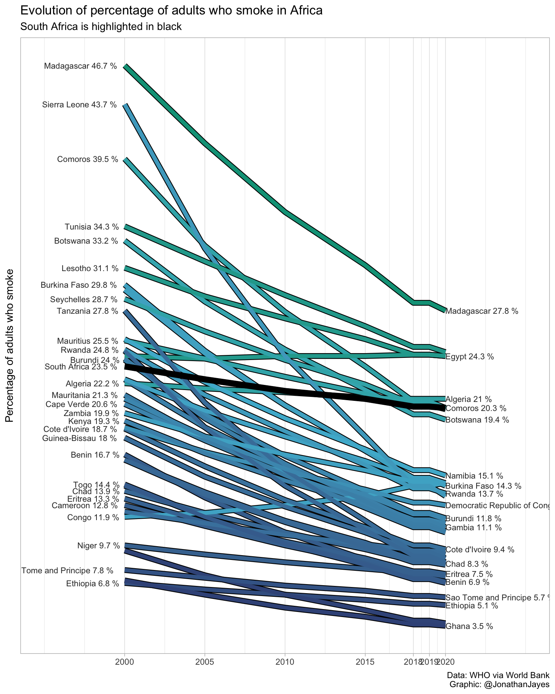
Show the code
# dev.off()Hmm, South Africa has seen a drop in smoking since 2000, but the drop is relatively small in comparison to the progress that other African nations have made in the last two decades.
We can also plot the evolution of the ranking of who smokes the most in Africa.
Show the code
plot_ranking <- function(continent_in, highlight_country_in){
tbl <- get_ranking(continent_in)
midpoint_in <- tbl %>%
distinct(country_name) %>%
count() %>%
pull() / 2
tbl %>%
mutate(across(contains("value"), ~ scales::percent(.x, scale = 1, accuracy = 1))) %>%
ggplot(aes(year, rank, colour = right_rank, group = country_name)) +
geom_line(size = 2.8, aes(year, rank, group = country_name), colour = "black") +
geom_line(size = 2) +
geom_line(size = 3, colour = "black", data = tbl %>% filter(country_name == highlight_country_in)) +
geom_text(aes(
x = 2000,
y = left_rank,
label = paste0(left_rank, ". ", country_name, " ", left_value)
),
colour = "grey20",
hjust = 1.1,
cex = 3
) +
geom_text(aes(
x = 2020,
y = right_rank,
label = paste0(right_rank, ". ", country_name, " ", right_value)
),
colour = "grey20",
hjust = 0,
cex = 3
) +
scale_y_reverse() +
scale_color_gradient2(
low = "blue",
high = "red",
mid = "pink",
midpoint = midpoint_in
) +
scale_x_continuous(breaks = c(2000, 2005, 2010, 2015, 2018, 2019, 2020)) +
coord_cartesian(xlim = c(1995, 2025)) +
theme(
legend.position = "none",
panel.grid.major.y = element_blank(),
panel.grid.minor.y = element_blank(),
axis.ticks.y = element_blank(),
axis.text.y = element_blank()
) +
labs(
x = NULL,
y = "Ranking of adults who smoke",
title = glue::glue("Evolution of ranking of adults who smoke in {continent_in}"),
subtitle = glue::glue("{highlight_country_in} is highlighted in black"),
caption = "Data: WHO via World Bank\nGraphic: @JonathanJayes"
)
}
# jpeg(
# filename = "posts/2022-10-17-our-world-in-data-choropleth/images/Africa_ranking.jpeg",
# height = 10,
# width = 8,
# units = "in",
# res = 1000
# )
plot_ranking("Africa", "South Africa")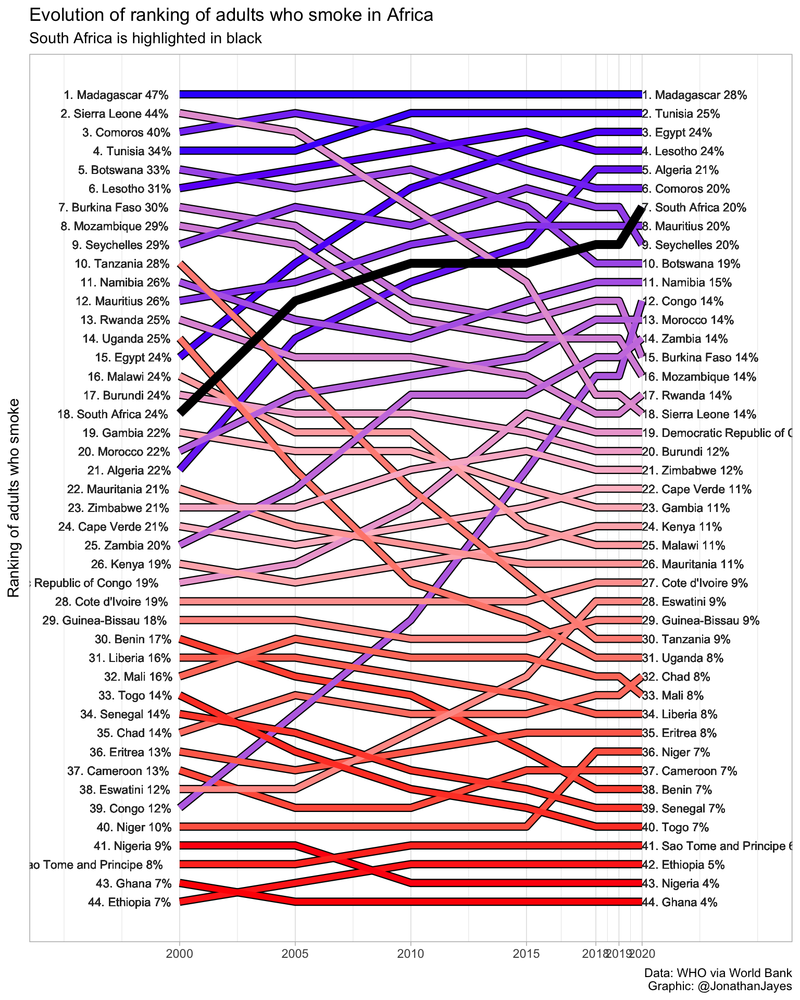
Show the code
# dev.off()Now we can see that South Africa has climbed the rankings from 18th place in 2000 up to 7th in 2020. Interesting!
What about the other continents?
Have a look at each below, and then give my Shiny app a gander (TODO).
Show the code
make_tab <- function(continent_in, highlight_country_in) { # function to make the tabs
cat("##", continent_in) # Label tab
cat("\n") # Close tab
p <- plot_levels(
continent_in,
highlight_country_in
) # Create plot in levels
print(p) # Display plot
cat("\n") # Space
q <- plot_ranking(
continent_in,
highlight_country_in
) # Create plot in levels
print(q)
cat("\n") # Close tab
}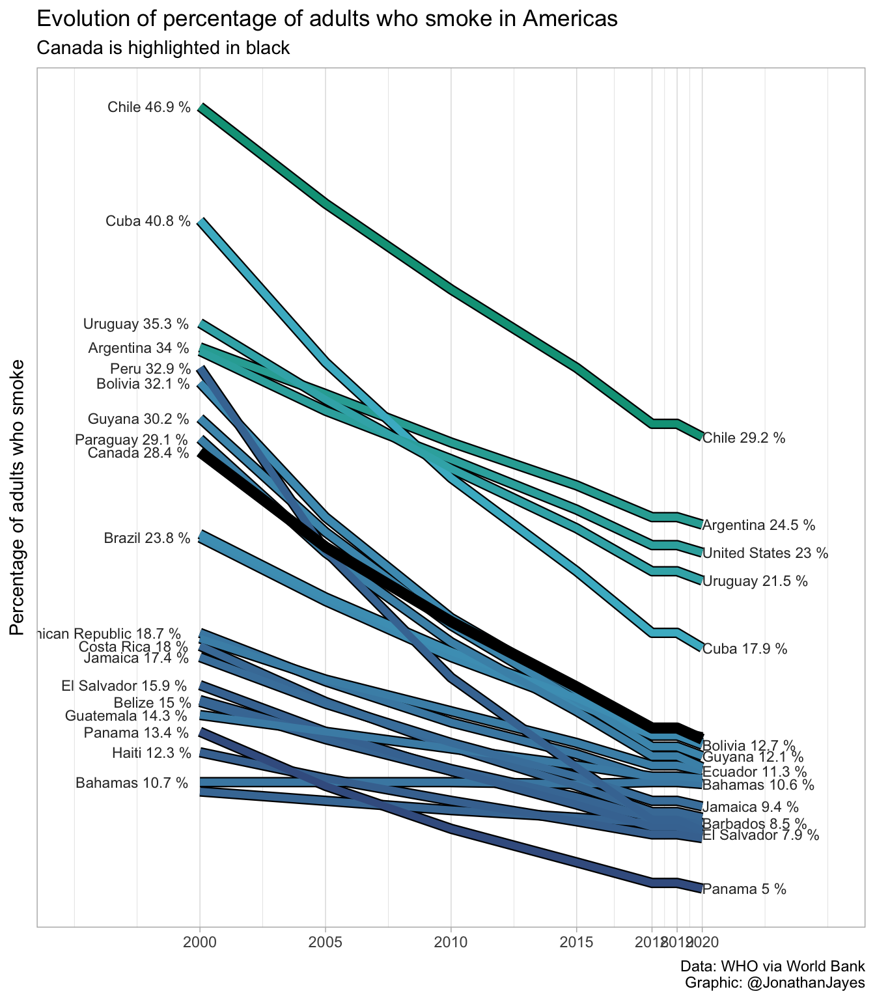
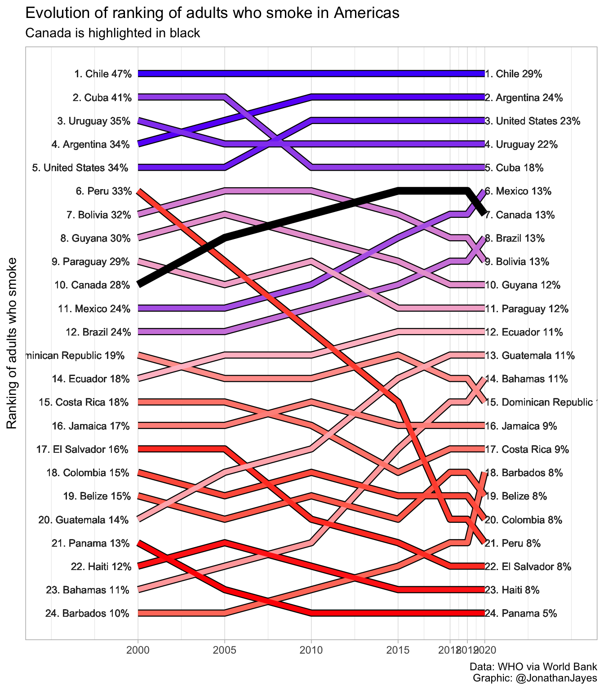
Show the code
make_tab("Asia", "China")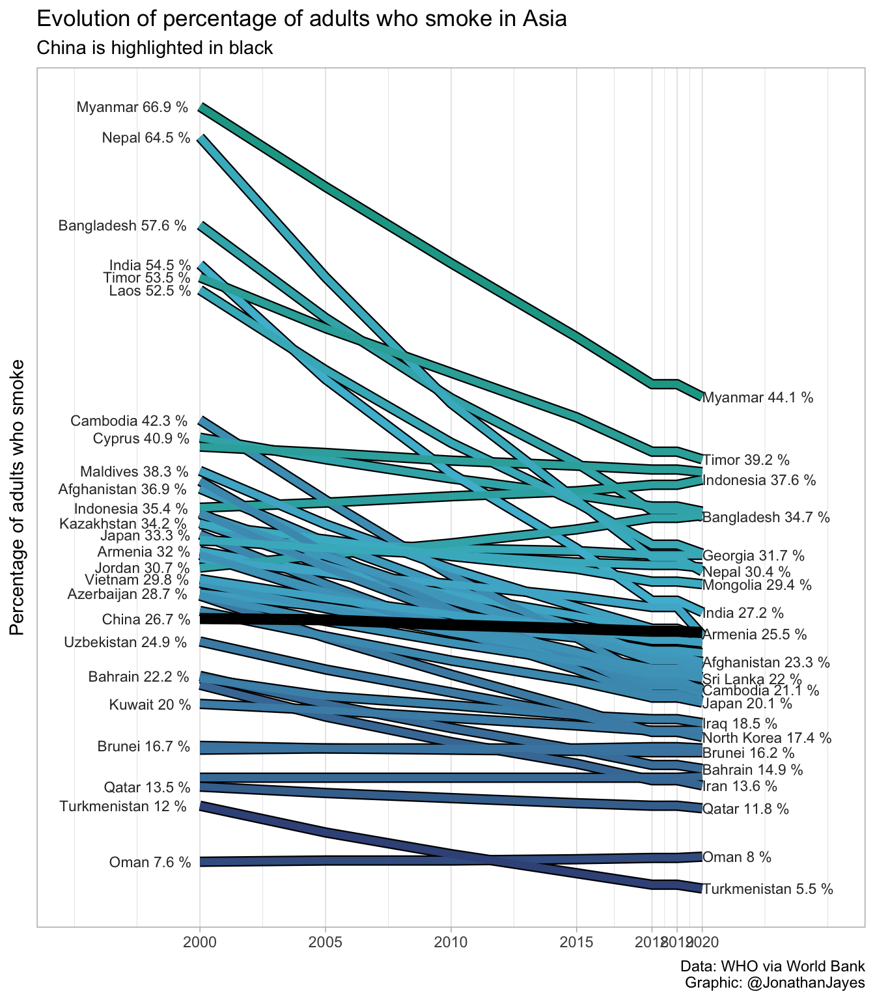
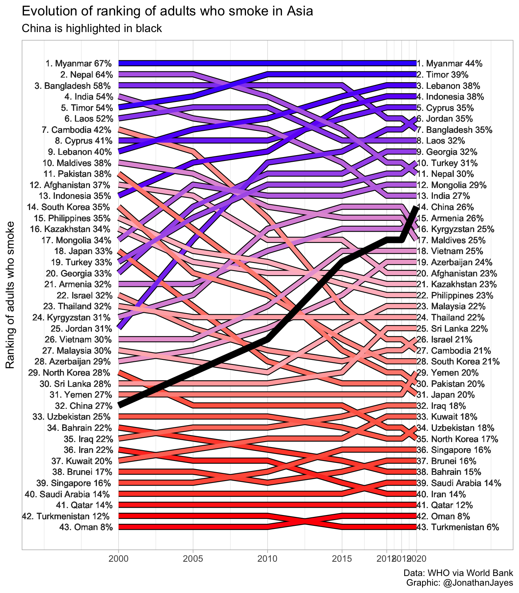
Show the code
make_tab("Europe", "Sweden")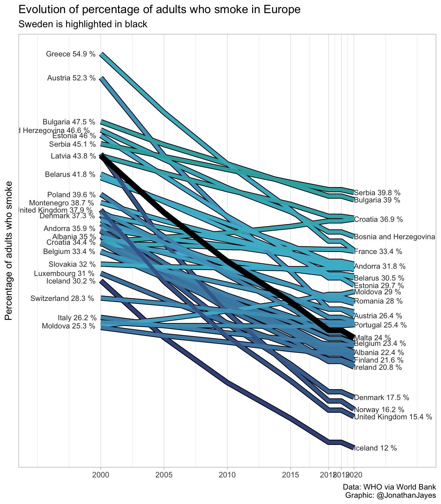
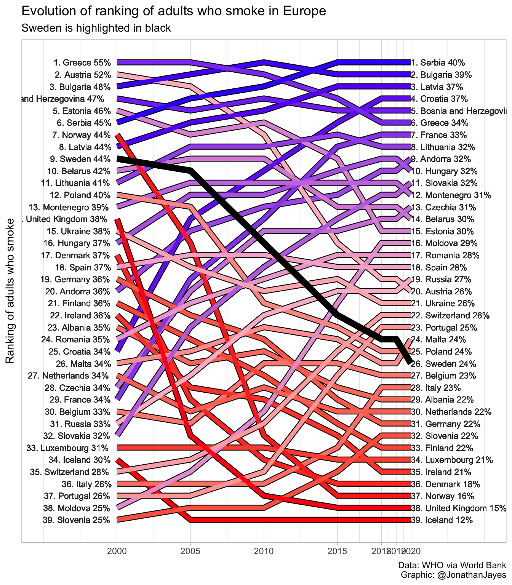
Show the code
make_tab("Oceania", "New Zealand")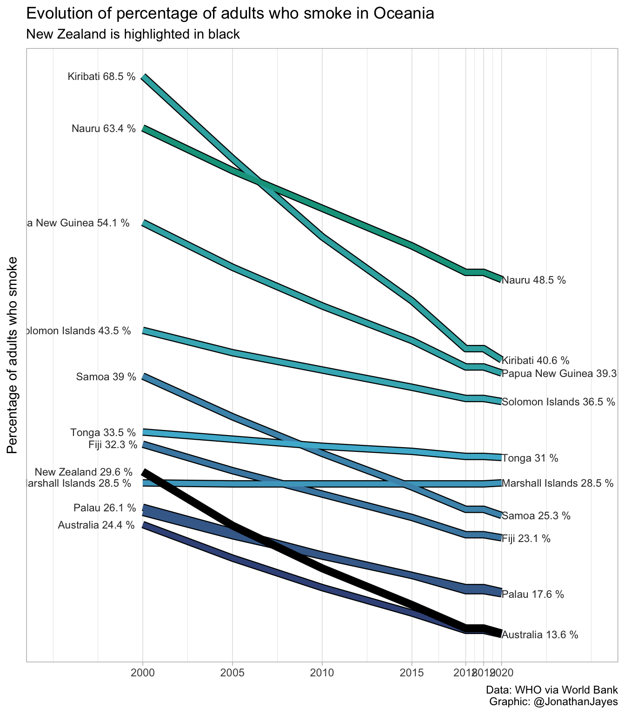
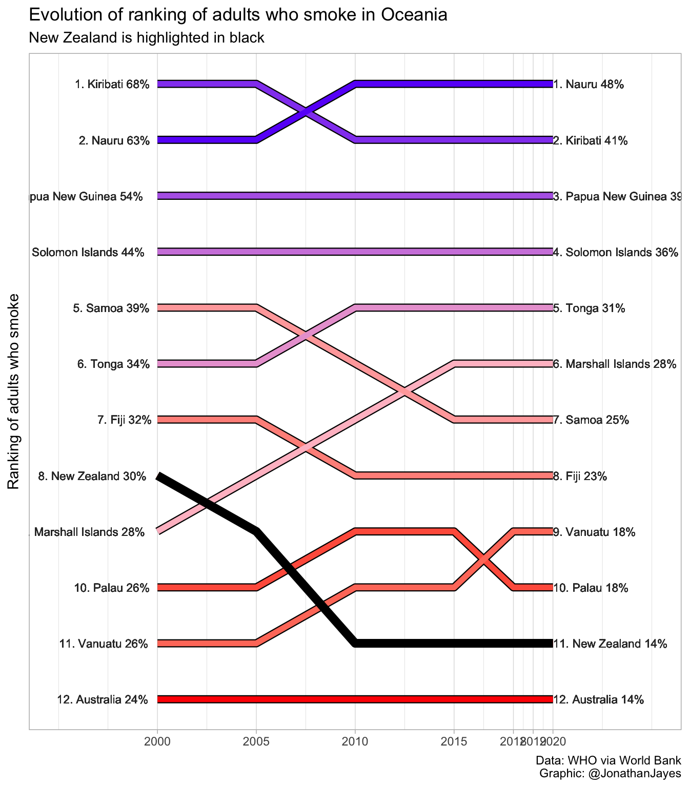